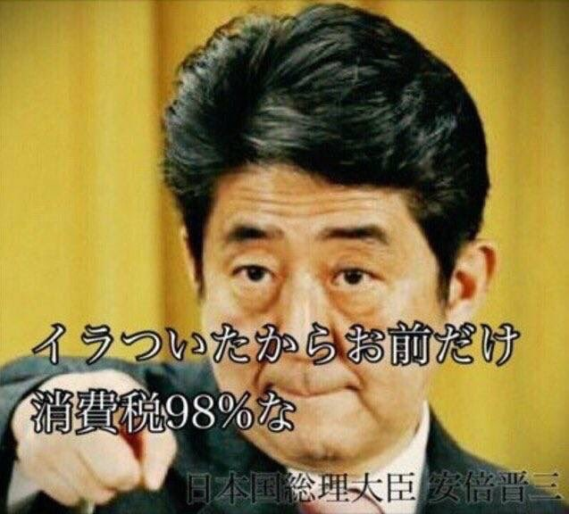

回复
谢邀。
我作为人民群众对此一无所知，只能通过一群自诩老板手眼通天的消息灵通的活跃网友的动向判断。
这批活跃网友，每次发言不超过140个字，看见别人帖子中出现超过三个回车就回复「太长不看」「捞分走人」，而自己想多说几句就用「长微博工具」把文字做成图片当附件贴出来。
这批活跃网友，信誓旦旦的宣称「永远也不会出现第六套人民币」，说将来都是「无现金社会」，四大国有银行会私有化为微信和支付宝两家私营银行，地球首富在马云和马化腾（有时是「张小龙」）之间产生。
这批活跃网友，说在新时代中国特色社会主义大好形势下，中文互联网极大繁荣，妄图螳臂挡车的钦定被历史の五对负重轮碾为齑粉的跳梁小丑，是那帮拿着退休金却既不肯打网络游戏又不肯去死的社会负担，成天就知道给医院交钱，让它们很为难。
这批活跃网友，说「童年强则兲朝强，童年富则兲朝富」，说中老年人总是有一种顽固僵化的自信，用老掉牙的过时经验看待新生事物，不听老人言幸福几十年。
这批活跃网友，说「第四套人民币退市」不是什么每一代人都会碰上的「商机」，而是直到世界末日都再也不会出现的过了这村没这店的「仙缘」，撑死胆大的饿死胆小的。
这批活跃网友还说了很多其它内容，一时半会想不起太多，等想起来再随时补充。
补充，刚才知乎临时工反应神速「政治敏感」，提醒了我又想起了一堆活跃网友提供的重要信息。
起源还是在龙空，前情提要略。
我说一帮网文写手的文笔都比钦定文豪强得多；
活跃网友说宁财神那批早期网络写手已经把持了出版界和改编影视动漫游戏的渠道，但凡码字工作者想出头必须上贡。
我问这就是自称「网络文学鬼才」却只能「走实体路线」的@马伯庸红得发紫的原因么？
活跃网友说那不一样，钦定文豪自打受精开始就命中注定功成名就，哪怕狗屁不通瞎编乱造也能热卖。
我问活跃网友，你们叫嚣着「跟金钱作对的必定没有好结果」，到处搜刮脑洞还豢养一批文抄公抄袭剽窃积攒IP炮制钦定娱乐大亨，放着那么多文笔出色还手速出众的码字巨侠不去利用，专门给钦定文豪大笔稿费（一字百元年入四千万）和小鲜肉花瓶巨额出场费，是因为「有钱就是可以为所欲为」么？
活跃网友（如龙空@姬光阳）说咋地吧，这叫与时俱进，你们老家伙只配从事夕阳产业，新时代中国特色社会主义大好形势下繁荣的中文互联网与你们无关，甭不服，三十年后还有你的位置么？
我说不就是洗钱么，很多其它网友也都知道了，这么多年捧红的钦定文豪也不少，郭敬明炫富韩寒反智，但没有一个像@马伯庸这样不加遮掩的参与政治斗争，整个中文互联网上网红不少，@马伯庸是唯一称帝的一个。
活跃网友说咋地吧，「裁判观众主办方都是我的人，你怎么和我斗」，@马伯庸洗钱怎么了，赃款来自「电信诈骗走私贩毒拐卖人口赌博嫖娼」都没事，你随地吐痰就能枪毙，信不信？
我说这就是差距吖，我作为钦定反派的形象，就是身正道直高风亮节俯仰无愧天地，洗钱这种事本来就不肯干，还用得着你们来罗嗦。
活跃网友说，不就是「吃不着葡萄说葡萄酸」么？「看着别人会所嫩模家里女仆歌妓性奴极大充沛羡慕嫉妒恨」？哪怕正面一点的评价，也不过是「脑壳死板不知道和光同尘」。
我说我已经证明了「明明有这个能力但就是不愿意」，包括但不限于「仆街写手不入流码农数学渣」等职业，祸国殃民这种事还是让你们家被血统稀罕的鸡巴肏出来的贵种干去吧。
活跃网友说，一块抹布一张卫生纸都有其价值，甭说你，就是严格自律的真正的共产党员，照样被红色基因玩弄于股掌之间，越是身正道直越是有可供利用之处。
……
再往后活跃网友就不继续泄露国家机密了，必须人民群众通过蛛丝马迹逐步调整判断分析出来。
举个例子吧，就看知乎人工智障算法在首页推荐的内容，为啥东北经济不行了？
最初是打着全国一盘棋的招牌，趟着地雷阵全面深化改革，咱工人要为党着想，我不下岗谁下岗。后来「国家」形势好了点，每次「大力振兴东北老工业基地」红头文件出台，往东北的财政拨款和投资在账面上转一圈都跑海南去了，持续了十几年，不解释。
然后最近才学乖，华东和东北对口合作，反正海南吃饱了。接下来就是这次「第四套人民币退市」的直到世界末日也不会再出现的「划时代商机」，通过百度和莆田系的对口合作关系，甭说东北，全国范围内但凡老家伙充沛的地方，民间存量货币账面上转一圈，就该跑福建去了。
即便主席台前三排看出这剧本了又能怎样？活跃网友说了吖，「一块抹布一张卫生纸都有其价值」，哪怕是崭新的带着油墨气息的北棒或台湾出品的第四套人民币百元四老头，银行照样有多少收多少坚决入账，那些「真正的共产党员」（甭管是不是演技）只需要拍桌子瞪眼大讲大道理就可以了也。
简单说，在党国高音喇叭铺天盖地洗脑之下，舆论相信民间老糊涂有得是，还已经老得生活不能自理，什么话都说不明白，「亲属」拿着旧币硬说是「因陋就简大干快上建设祖国一辈子的血汗钱，攥手心里准备当彩礼嫁妆棺材本，之后被扫地出门大下岗说多了都是泪」，看兲朝主席台前三排有啥办法「拒收」。
各位想通了么？
所以我才说，哪怕是为非作歹，包括但不限于洗钱，@马伯庸也远远不是对手，只不过咱道德水平极高而「情商」甚低罢了。
反正剧本公开提供了，@马伯庸是否看到利好消息就摇身一变从事「养老」专业，那就不关我事了。况且偌大个兲朝山头林立，家家都有老糊涂，也不见得让杭州莆田深圳吃独食嘛。
顺便活跃气氛，提供活跃网友刚刚发布的，「马伯庸为非作歹屁事没有，你随地吐痰就当场枪毙」：

你把我惹毛了，这就修宪并且全票通过，98%消费税
补充，把在简书与网友交流的内容转过来：
非得表态的话，那就是「贵种怎么不长记性呢」？
或者是在各种虚拟电子娱乐当中的人民币玩家金手指用多了默认开挂于是在现实中也有了天命昭昭的错觉，以为一切尽在掌握中，阴谋诡计刚刚有个「构思」就开始憧憬「成功」之后的性福生活了？
还及时运用当代发达的传媒技术广而告之，生怕剧本里面的配角、龙套甚至NPC两脚畜牲们不知道天命气数钟情于哪个人渣。
所以其它内容没啥好说的，都说过多少次了，@马伯庸作为公开称帝的网红，围绕它的所有炒作手段都是为了现实政治和意识形态斗争服务。
只不过呢，自以为「作者最大剧本钦定，导演叫人三更死谁敢留人到五更」鼓吹「朕即国家，我就是大局，你们要顾全大局」的那批幻想着改朝换代「从龙之功」兑换为「丹书铁卷」从此「世袭罔替与国同休」可以尽情鱼肉百姓的「股肱之臣」，在各种自我催眠的幻觉中，已经提供了足够充沛的信息，眼睛雪亮的群众和智慧无穷的人民都已经反应过来了也。